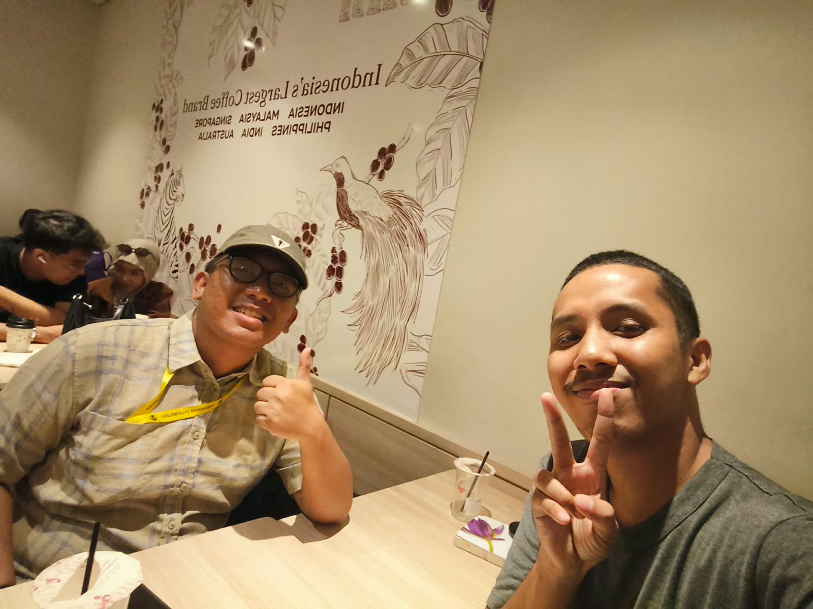

Selamat Ulang Tahun, Bang Jonathan Christopher Lalihatu, S.Ds. 🎂
Happy Birthday, Jonathan 🎂
Sebuah ruang kecil untuk merayakan pertemuan sederhana, telinga yang mau mendengar, persahabatan, dan doa bagi perjalanan abang.
A little space to celebrate a simple meeting, a listening ear, friendship, and prayers for the road ahead.

Aku mungkin tidak selalu tahu kalimat terbaik untuk menggambarkan arti sebuah pertemuan. Namun aku tahu, hari itu di Kopi Kenangan Margonda menjadi salah satu tempat pertama aku bisa bercerita tentang harapanku, pergumulanku, dan perjalanan kuliahku. Terima kasih karena abang hadir dan bersedia mendengar.
I may not always know the perfect words to describe what a meeting can mean. But I know our day at Kopi Kenangan Margonda became one of the first places where I could talk about my hopes, struggles, and college journey. Thank you for showing up and being willing to listen.
Selamat bertambah usia, Bang Jho. Semoga di tengah segala tanggung jawab dan pergumulan pekerjaan, abang tetap punya kekuatan untuk melanjutkan langkah, kebijaksanaan untuk memilih jalan, dan orang orang baik yang mengingatkan bahwa abang tidak harus menghadapi semuanya sendirian. Semoga apa pun yang abang kerjakan membawa manfaat, dan setiap kebaikan yang abang berikan kembali kepada abang melalui jalan yang bahkan tidak abang sangka. Ketika nanti aku kembali dari Kuala Lumpur, aku mau bawa sesuatu untuk abang. Bukan soal besar atau kecilnya, tetapi sebagai tanda terima kasih dari gue untuk orang yang pernah menyediakan waktu dan telinga saat gue membutuhkannya. Simpan sedikit ruang untuk cerita dan ngopi lagi ya, Bang. Tuhan memberkati setiap langkah abang.
Happy birthday, Jonathan. In the middle of every responsibility and work related struggle, may you keep finding the strength to move forward, the wisdom to choose your path, and good people who remind you that you do not have to face everything alone. May your work bring goodness, and may the kindness you give return to you in ways you never expected. When I return from Kuala Lumpur, I have something I would like to bring you. It is not about how big or small it is, but a small thank you from me to someone who once made time and listened when I needed it. Save a little room for another conversation and coffee, alright, Jonathan? May God bless every step you take.